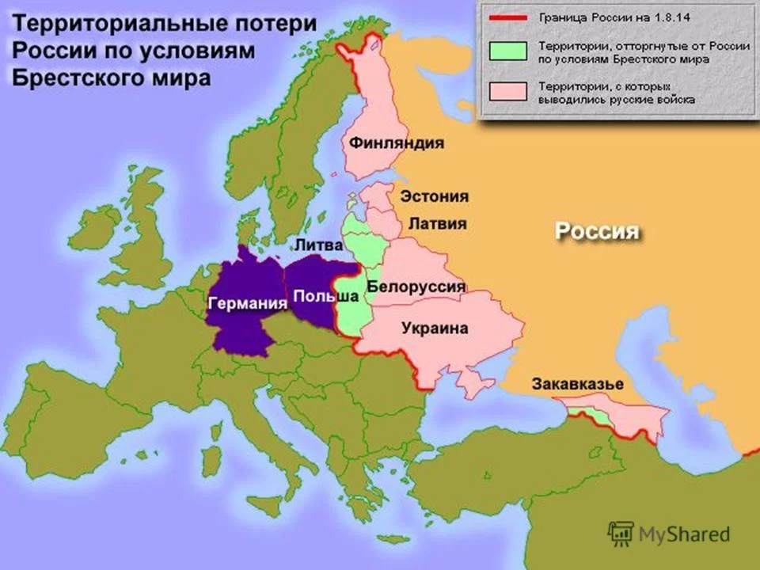
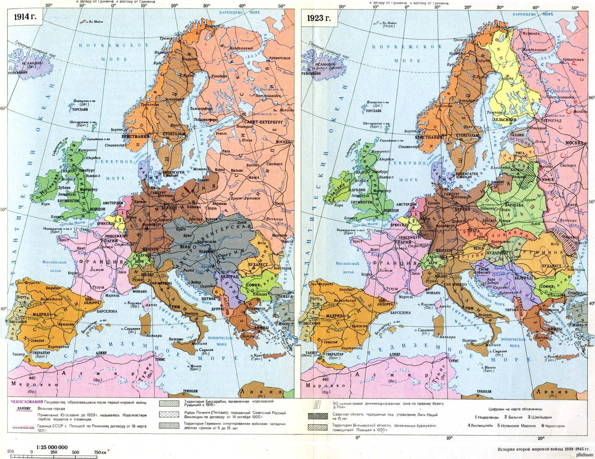
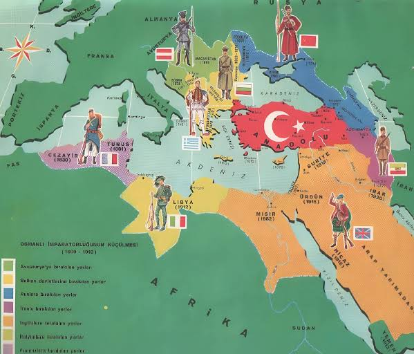

«Мир рухнул в августе 1914 года, и старый порядок уже никогда не смог возродиться в прежнем виде...»
Падение четырех великих империй
Война уничтожила старые многонациональные гиганты Европы и Ближнего Востока.
Российская империя
Революция 1917 года и Брестский мир привели к падению монархии. На ее руинах образовался СССР, а западные территории обрели независимость.

Австро-Венгрия
Лоскутная империя Габсбургов полностью распалась на несколько суверенных и независимых национальных государств.
Османская империя
Потеряла контроль над Ближним Востоком, земли которого перешли под мандатное управление Англии и Франции. Возникла современная Турция.
Германская империя
По Версальскому договору потеряла колонии и значительные европейские территории в пользу соседей, что изменило баланс сил в Европе.
Карта Европы заново перекроена
Принцип национальной самоидентификации провозгласил появление новых государств на карте, о которых раньше не слышали или чья государственность была прервана столетия назад.
- Польша восстановила независимость после 123 лет разделов.
- Чехословакия и Югославия объединили новые народы.
- Прибалтика (Эстония, Латвия, Литва) обрела свободу.
Интересный факт для Камиллы:
Сравнение карт 1914 и 1923 годов напоминает лоскутное одеяло, которое перешили заново. Сотни тысяч километров границ переместились, заставив миллионы людей переосмыслить свою национальную принадлежность.

Глобальные изменения вне Европы
Эхо войны докатилось до Ближнего Востока и Нового Света.
Ближний Восток и мандаты
Раздел османских владений привел к созданию новых границ в пустынях и долинах (Ирак, Сирия, Ливан, Иордания, Палестина), которые во многом определяют современные конфликты в регионе и по сей день.

Возвышение США
Ослабление европейских держав выдвинуло Соединенные Штаты Америки на роль ключевого глобального финансового и политического игрока мировой арены.